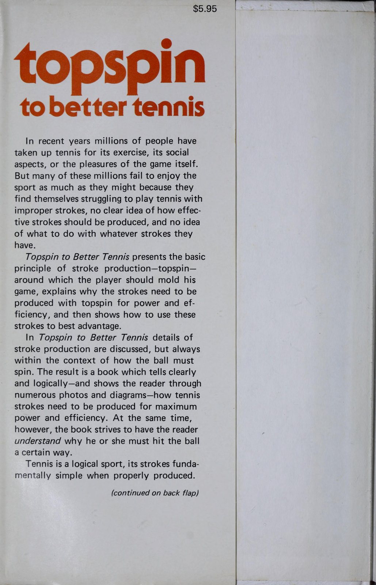
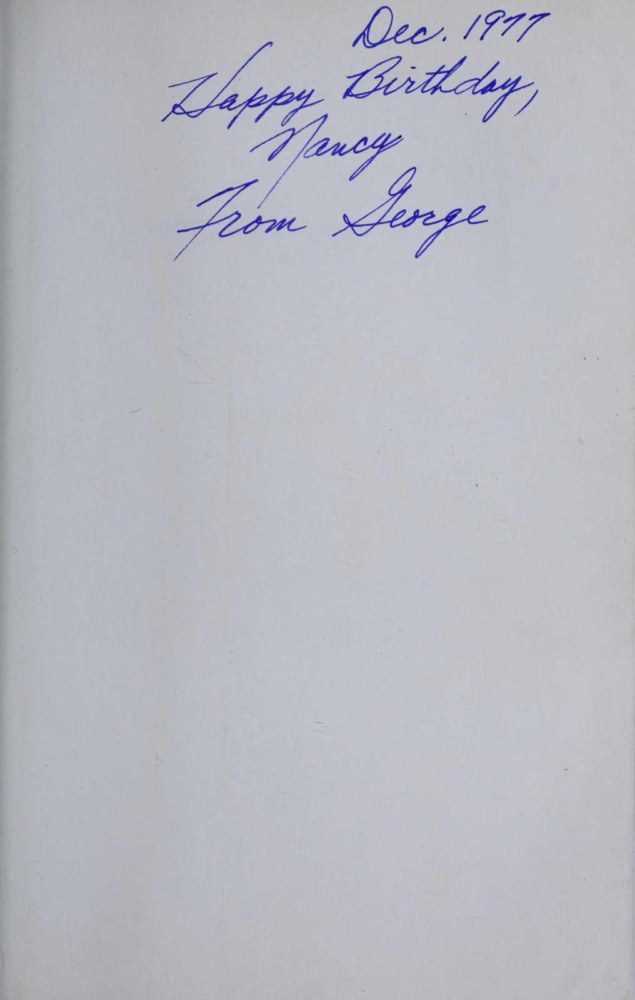
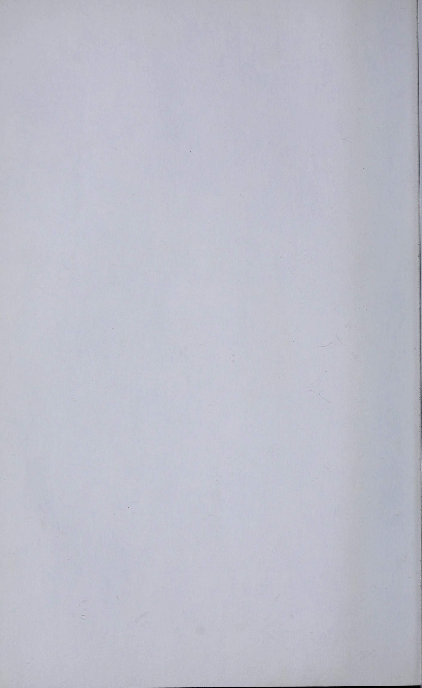
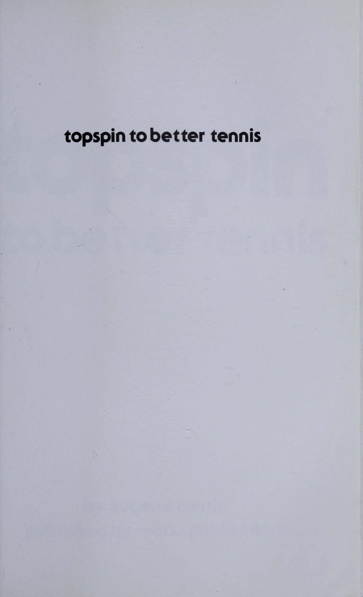
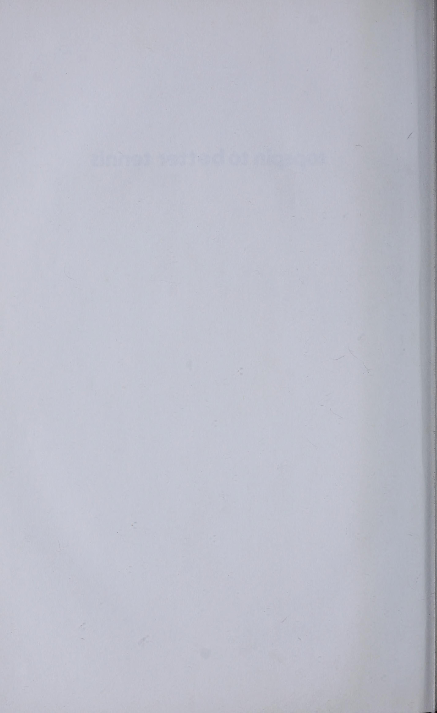
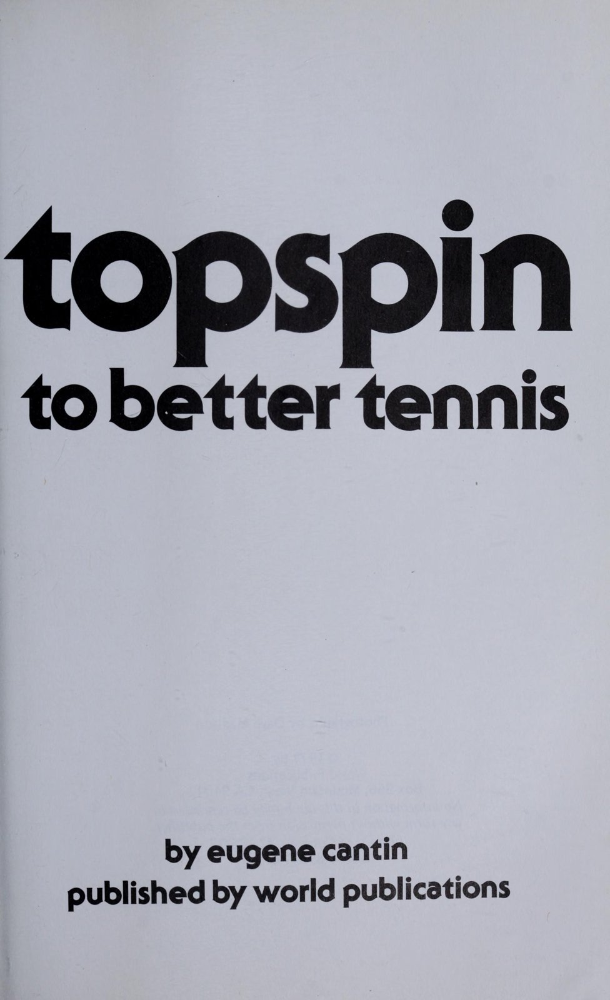
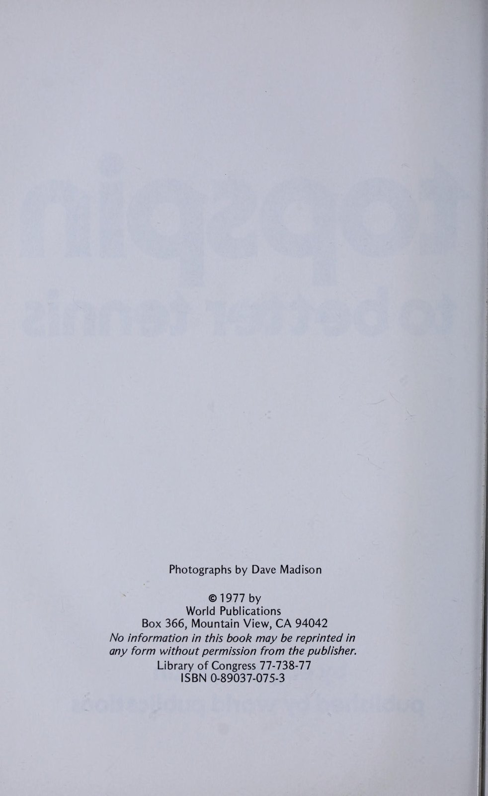
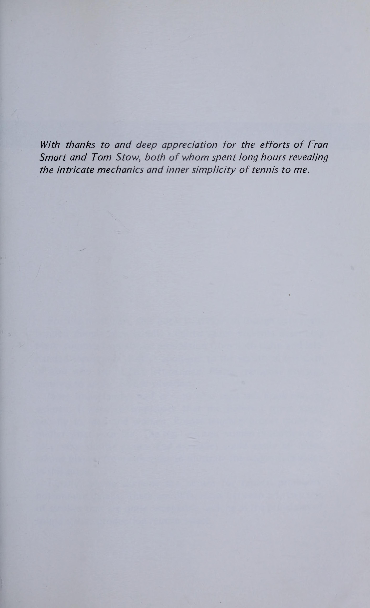

Phần 1: Bản Chất Của Topspin & Vật Lý Quần Vợt Hiện Đại
Cuốn sách Topspin to Better Tennis của tác giả Eugene Cantin là một tác phẩm tiên phong đặt nền móng cho cuộc cách mạng xoáy cuộn (topspin revolution) trong môn quần vợt. Trước khi topspin trở thành tiêu chuẩn thống trị tuyệt đối như ngày nay, phần lớn người chơi chỉ đánh những đường bóng phẳng (flat) hoặc cắt bóng (underspin). Eugene Cantin đã chứng minh rằng topspin không phải là một kỹ thuật cao siêu bí hiểm, mà là chiếc chìa khóa vàng giúp người chơi đánh bóng mạnh hơn nhưng lại an toàn hơn gấp bội.
Phần này giải mã bản chất khí động học của cú đánh xoáy cuộn, hiệu ứng Magnus, quỹ đạo vung vợt từ thấp lên cao (low-to-high swing) và cơ chế tạo độ xoáy an toàn qua lưới.
1. Khí Động Học Của Topspin: Hiệu Ứng Magnus (The Physics of Topspin)
Tại sao một quả bóng xoáy cuộn lại có thể bay vọt qua lưới rất cao nhưng sau đó lại cắm chúi xuống sân một cách kỳ diệu?
- Hiệu Ứng Magnus (The Magnus Effect): Khi quả bóng xoay tròn về phía trước theo chiều kim đồng hồ trong không khí, không khí di chuyển qua đỉnh quả bóng sẽ bị cản lại (vận tốc thấp hơn, áp suất cao hơn), trong khi không khí đi qua đáy quả bóng di chuyển nhanh hơn (áp suất thấp hơn). Sự chênh lệch áp suất này tạo ra một lực đẩy hướng thẳng xuống dưới (downward aerodynamic force), kéo quả bóng cắm xuống mặt sân nhanh hơn nhiều so với chỉ có tác động của trọng lực.
- Độ Cao An Toàn Qua Lưới (Net Clearance Margin): Với một cú đánh phẳng, bạn chỉ có biên độ an toàn từ 15 đến 30 cm phía trên mép lưới; nếu đánh cao hơn, bóng sẽ bay ra ngoài vạch cuối sân. Ngược lại, với cú topspin nặng, bạn có thể đánh bóng bay cao hơn mép lưới từ 1 đến 1.5 mét mà bóng vẫn cắm sâu vào trong sân với độ an toàn 100%.
- Độ Nảy Bùng Nổ (The Heavy Bounce): Khi quả bóng topspin chạm đất, năng lượng xoáy cuộn về phía trước lập tức chuyển hóa thành một lực đẩy bốc cao và chồm về phía trước, buộc đối thủ phải lùi sâu ra sau hoặc đánh bóng ở tầm ngang vai vô cùng bất lợi.

2. Cơ Học Vung Vợt Từ Thấp Lên Cao (Low-to-High Swing Path)

Eugene Cantin nhấn mạnh rằng để tạo ra xoáy cuộn, mặt phẳng chuyển động của cây vợt phải đi dốc lên trên xuyên qua bóng:
Hãy tưởng tượng quả bóng như một mặt đồng hồ. Cây vợt phải xuất phát từ dưới vị trí 6 giờ, tiếp xúc vào lưng quả bóng và chải mạnh trượt lên vị trí 12 giờ. Động tác chải này truyền mô-men xoắn vào tâm bóng, tạo ra hàng nghìn vòng quay mỗi phút (RPM).
- Hạ Đầu Vợt Sâu (Dropping the Racket Head): Khi chuẩn bị đưa vợt ra trước, đầu vợt phải rơi xuống thấp hơn độ cao của quả bóng tối thiểu 20 đến 30 cm. Nếu đầu vợt ngang tầm bóng, bạn sẽ chỉ tạo ra cú đánh phẳng.
- Góc Mặt Vợt Thẳng Đứng Tại Điểm Tiếp Xúc: Một sai lầm kinh điển của người mới tập là úp mặt vợt xuống đất khi tiếp xúc bóng khiến bóng rúc lưới. Cantin chỉ rõ: Mặt vợt phải gần như vuông góc với mặt sân (90 độ) hoặc chỉ hơi úp nhẹ vài độ ngay tại thời Điểm tiếp xúc bóng; độ xoáy được tạo ra từ hướng di chuyển của đầu vợt đi lên, không phải từ việc cố tình úp cổ tay.
3. Cảm Nhận Cơ Thể & Phương Pháp Tự Soi Gương (Mirror Training)
Để xây dựng đường dẫn truyền thần kinh chuẩn xác cho chuyển động vung vợt từ thấp lên cao:
- Tập Luyện Không Bóng Trước Gương (Mirror Practice): Đứng trước một tấm gương lớn, thực hiện động tác vung vợt chậm rãi. Quan sát sự chuyển dịch trọng tâm từ chân sau sang chân trước và kiểm tra vị trí đầu vợt ở đáy vòng cung trước khi vút lên vai đối diện.
- Thả Lỏng Cổ Tay Tự Nhiên: Cổ tay không được gồng cứng như khúc gỗ. Cổ tay cần có độ mềm dẻo (lag and snap) để đầu vợt có thể trễ lại phía sau và quất vút lên trên vào khoảnh khắc tiếp xúc bóng.
Phần 2: Vũ Khí Cú Đánh Xoáy Cuộn: Thuận Tay, Trái Tay & Cú Lốp Tấn Công
Khi đã làm chủ nguyên lý khí động học, bước tiếp theo là tích hợp kỹ thuật xoáy cuộn vào kho vũ khí tấn công từ vạch cuối sân. Eugene Cantin phân tích chi tiết từng giai đoạn chuyển động của cú thuận tay và trái tay topspin, chỉ rõ cách thức phối hợp giữa chuyển động xoay thân và tốc độ vung đầu vợt để tạo ra những đường bóng vừa sâu, vừa nặng vừa có quỹ đạo hiểm hóc.
Phần này hướng dẫn cơ học hoàn thiện cú thuận tay topspin, kỹ thuật trái tay một tay và hai tay, cùng tuyệt kỹ lốp bóng tấn công (topspin lob) làm tê liệt mọi đối thủ trên lưới.
1. Cú Thuận Tay Topspin Uy Lực (The Topspin Forehand)
Cú thuận tay là vũ khí ghi điểm chủ lực của hầu hết các tay vợt. Để biến nó thành một khẩu pháo xoáy cuộn thực sự:
- Lựa Chọn Kiểu Cầm Vợt Tối Ưu: Kiểu cầm Eastern Forehand hoặc Semi-Western là lý tưởng nhất. Semi-Western cho phép mặt vợt tự nhiên hơi úp xuống khi hạ đầu vợt, giúp bạn tự tin chải mạnh lên bóng mà không sợ bóng bay vọt ra ngoài.
- Vòng Mở Vợt Hình Chữ C (The C-Loop Backswing): Vợt được nâng lên ngang tầm tai khi xoay vai, sau đó hạ mượt mà xuống dưới tầm hông thành một đường cong liên tục. Chuyển động lượn sóng này giúp duy trì quán tính chuyển động và loại bỏ các điểm dừng giật cục.
- Gia Tốc Đầu Vợt & Động Tác Kết Thúc Quét Vai: Sau khi chạm bóng ở phía trước thân người, khuỷu tay và cẳng tay gập lại đưa cây vợt quét chéo lên trên qua vai đối diện (windshield wiper finish). Động tác kết thúc cao đảm bảo bóng có độ cao an toàn vượt qua mép lưới.

2. Cú Trái Tay Topspin: Một Tay & Hai Tay (Topspin Backhand)
Tạo xoáy cuộn ở cánh trái tay đòi hỏi sự kỷ luật tuyệt đối về vị trí đặt chân và điểm tiếp xúc:
- Cú Trái Tay Một Tay (One-Handed Topspin): Đứng ở thế chân đóng, xoay vai sâu về phía sau. Hạ đầu vợt xuống thấp dưới tầm bóng, vung cánh tay thẳng từ dưới lên trên như một đường kiếm chém vút lên trời. Tay không thuận bung mạnh về phía sau để giữ trục cột sống thẳng đứng.
- Cú Trái Tay Hai Tay (Two-Handed Topspin): Tay trên (tay không thuận) là động cơ chính kéo cây vợt đi lên từ dưới tầm gối. Tay thuận đóng vai trò định hướng và giữ thăng bằng. Thế đứng mở hoặc bán mở cho phép xoay hông bộc phát để tạo ra tốc độ bóng khủng khiếp.

3. Tuyệt Kỹ Lốp Bóng Tấn Công (The Offensive Topspin Lob)

Cú lốp bóng topspin là một trong những cú đánh đẹp mắt và ngoạn mục nhất trong quần vợt:
- Ngụy Trang Động Tác Đánh Thường (Disguise): Động tác chuẩn bị và mở vợt hoàn toàn giống hệt một cú đánh bóng passing shot bình thường từ cuối sân, khiến đối thủ trên lưới tin rằng bạn sắp đánh mạnh và họ sẽ chủ động áp sát lưới để đón bắt volley.
- Tăng Tốc Chải Thẳng Đứng (Extreme Vertical Brush): Tại khoảnh khắc tiếp xúc, thay vì đẩy vợt xuyên qua bóng, bạn quất đầu vợt dốc đứng lên trời với tốc độ cực đại. Quả bóng bay vút lên cao qua đầu vợt của đối thủ, và ngay khi họ nghĩ bóng sẽ bay ra ngoài sân, độ xoáy cuộn khủng khiếp sẽ kéo quả bóng cắm chúi xuống bên trong vạch cuối sân và nảy bốc vọt ra xa.
Phần 3: Giao Bóng Xoáy Nảy, Trả Giao Chủ Động & Kỹ Năng Đập Bóng Trên Không
Giao bóng là cú đánh duy nhất trong môn quần vợt mà bạn có toàn quyền kiểm soát không gian, thời gian và nhịp điệu mà không chịu sự can thiệp của đối thủ. Eugene Cantin khẳng định rằng cú giao bóng xoáy nảy (topspin kick serve) là bước nhảy vọt quan trọng nhất đưa một người chơi từ cấp độ phong trào lên hàng ngũ cao thủ thi đấu. Một quả giao bóng hai có topspin nặng sẽ loại bỏ hoàn toàn nỗi ám ảnh về lỗi giao bóng kép (double faults) và biến quả giao bóng hai thành một đòn tấn công thực thụ.
Phần này phân tích cơ học chi tiết của cú giao bóng topspin kick, chiến thuật trả giao bóng xoáy cuộn và kỹ năng làm chủ các quả đập bóng trên không (overhead smash).
1. Cơ Học Của Cú Giao Bóng Topspin Kick (The Kick Serve Mechanics)
Sự khác biệt cốt tử giữa một cú giao bóng phẳng và một cú kick serve nằm ở vị trí tung bóng và góc quét của mặt vợt:
- Vị Trí Tung Bóng Phía Sau Đầu (Toss Placement): Thay vì tung bóng chếch về phía trước bên phải như cú giao bóng phẳng, bạn cần tung bóng hơi lệch về phía sau đầu hoặc đỉnh đầu (vị trí 11 giờ đến 12 giờ đối với người thuận tay phải). Vị trí này buộc cơ thể phải ưỡn cong lưng dưới như một cây cung nén thế năng.
- Gập Khuỷu Tay Thả Vợt Vào Rãnh Lưng (Racket Drop): Cây vợt phải rơi sâu xuống phía sau lưng với đầu vợt hướng thẳng xuống đất. Khoảng cách rơi càng sâu, đòn bẩy gia tốc khi vung vợt lên càng lớn.
- Quẹt Vợt Từ 7 Giờ Lên 1 Giờ (The 7-to-1 O'clock Brush): Khi vung vợt lên đón bóng, mặt vợt không đánh thẳng vào tâm bóng mà cọ xát từ góc dưới bên trái trượt chéo lên góc trên bên phải quả bóng. Động tác này truyền tải cả độ xoáy cuộn (topspin) lẫn xoáy ngang (sidespin).
- Quỹ Đạo Bay & Độ Nảy Quái Chiêu: Quả bóng bay vọt qua lưới với độ cao an toàn cực lớn (cách mép lưới 1 đến 1.5 mét), cắm mạnh vào ô giao bóng và lập tức nảy bốc vọt lên ngang mang tai đối phương, đẩy họ văng ra xa ngoài sân.

2. Trả Giao Bóng Topspin: Đón Bóng Sớm Trên Đà Nảy (Return of Serve)
Đối phó với những tay giao bóng có độ xoáy nặng đòi hỏi sự chủ động và dũng cảm:
- Không Được Lùi Quá Xa Ra Sau: Sai lầm lớn nhất khi đón quả kick serve là lùi sâu ra sau hàng rào. Bóng càng nảy sẽ càng bốc cao và xoáy ra xa, đẩy bạn vào thế mất thăng bằng hoàn toàn.
- Bước Lên Đón Bóng Trên Đà Nảy (Taking It on the Rise): Hãy đứng sát vạch cuối sân hoặc bước vào trong sân 1 bước. Đón bóng ngay khi bóng vừa chạm đất nảy lên ngang tầm thắt lưng, sử dụng một cú vung vợt ngắn gọn gàng để mượn lực bóng đưa trả sâu về góc sân đối thủ.
3. Cú Đập Bóng Trên Không Uy Lực (The Overhead Smash)
Cú smash mượn phần lớn cấu trúc cơ học của cú giao bóng để giải quyết những quả lốp bóng bổng của đối phương:
- Định Vị Không Gian & Xoay Nghiêng Người: Ngay khi nhận diện quả bóng bổng, lập tức xoay nghiêng người sang bên, giơ tay trái chỉ thẳng vào bóng để đo cự ly và lùi chân bằng các bước trượt ngắn.
- Bật Nhảy & Vươn Đỉnh Cao: Nhún hai đầu gối và bật nhảy đón bóng ở điểm cao nhất phía trước trán, Động tác sấp cổ tay / xoay trong cẳng tay dứt khoát dìm bóng xuống phần sân trống.
Phần 4: Chiến Thuật Vận Dụng Topspin, Thi Đấu Đôi & Bản Lĩnh Thi Đấu
Sở hữu kỹ thuật xoáy cuộn hoàn hảo chỉ là bước khởi đầu; biết cách vận dụng nó vào sơ đồ chiến thuật thực chiến để bẻ gãy ý chí của đối thủ mới là đỉnh cao của nghệ thuật quần vợt. Eugene Cantin kết thúc tác phẩm bằng việc chỉ rõ cách thức topspin thay đổi hoàn toàn cục diện thi đấu đánh đơn và đánh đôi, cũng như cách thức xây dựng sự tự tin tuyệt đối vào quỹ đạo bay của quả bóng.
Phần kết này phân tích chiến thuật ép góc bằng bóng xoáy nặng, cách đối phó với những cú cắt slice thấp, chiến thuật đánh đôi hiện đại và tâm lý thi đấu điềm tĩnh của một tay vợt làm chủ topspin.
1. Chiến Thuật Ép Góc Bằng Bóng Xoáy Nặng (Heavy Spin Pressure)
Topspin mang lại cho bạn hai lợi thế chiến thuật vượt trội mà các cú đánh phẳng không thể có được:
- Góc Đánh Cực Rộng (Short-Angle Topspin): Nhờ hiệu ứng Magnus kéo bóng cắm xuống sân sớm, bạn có thể thực hiện những cú đánh chéo sân với góc mở cực rộng (cách lưới chỉ vài mét). Quả bóng nảy bốc vọt ra ngoài hàng rào biên, đẩy đối thủ hoàn toàn ra khỏi sân và mở toang 80% phần sân trống cho cú đánh dứt điểm tiếp theo.
- Ghim Chân Đối Thủ Phía Sau Vạch Cuối Sân: Bằng cách đưa bóng bay cao hơn lưới 1 mét với độ xoáy cuộn mạnh, điểm rơi của bóng sẽ liên tục nằm sâu ở 1 mét cuối sân. Khi bóng nảy lên ngang ngực hoặc vai, đối thủ sẽ bị ghìm chặt ở cự ly 2 đến 3 mét phía sau vạch đáy sân, hoàn toàn mất đi khả năng tung đòn tấn công.

2. Ứng Dụng Topspin Trong Thi Đấu Đánh Đôi (Topspin in Doubles)

Trong đánh đôi, khu vực mặt lưới là chiến trường khốc liệt nhất. Topspin là vũ khí khắc tinh của những tay bắt lưới cừ khôi:
- Cú Đánh Dìm Bóng Xuống Chân (The Dipping Shot): Thay vì cố gắng đánh passing shot thẳng vào góc sân hẹp, hãy tung ra một cú topspin vừa phải nhắm thẳng vào chân của người đứng lưới đối phương. Quả bóng bay qua mép lưới rồi cắm chúi ngay dưới mũi giày của họ, buộc họ phải tung ra một quả volley phòng thủ nâng bóng lên cao (pop-up) để đồng đội của bạn trên lưới kết liễu.
- Cú Lốp Bóng Topspin Đánh Đôi (The Doubles Topspin Lob): Khi cả hai đối thủ cùng áp sát lưới gây nghẹt thở, cú lốp bóng topspin qua đầu người đứng lưới bên trái tay sẽ đảo ngược hoàn toàn thế trận, biến thế phòng thủ bị động thành đòn tấn công ghi điểm trực tiếp.
3. Bản Lĩnh & Sự Điềm Tĩnh Của Nhà Vô Địch (Mental Perspective)
Lợi ích lớn nhất mà topspin mang lại cho một tay vợt không chỉ nằm ở cơ bắp hay kỹ thuật, mà nằm ở sự bình an trong tâm trí:
- Tin Tưởng Tuyệt Đối Vào Quy Luật Vật Lý: Khi bạn hiểu rằng hiệu ứng khí động học luôn kéo quả bóng vào sân, bạn sẽ không còn cảm giác sợ hãi khi tung vợt trong các thời điểm điểm số quyết định (Break point hay Tie-break). Bạn dám vung vợt hết biên độ trong khi đối thủ đang run rẩy co cứng tay.
- Kiên Nhẫn Xây Dựng Điểm Số: Không nóng vội tìm kiếm một cú đánh ăn điểm ngay lập tức. Hãy kiên nhẫn tung ra 4 đến 5 đường bóng xoáy nặng liên tiếp để bào mòn thể lực và sự kiên nhẫn của đối phương cho đến khi họ tự mắc sai lầm.
- Thưởng Thức Trò Chơi Trọn Vẹn: Quần vợt là một hành trình rèn luyện bản thân liên tục. Mỗi cú đánh xoáy cuộn mượt mà bay qua lưới là một trải nghiệm thăng hoa của sự kết hợp hoàn hảo giữa thể chất, trí tuệ và niềm đam mê.